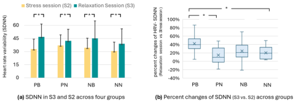

Bibliographic context
Title, authors, year, venue, DOI, and tags flow from Zotero when available.
Local-first research pipeline
PaperRoach turns Zotero PDFs into linked, searchable Obsidian notes with models running through Ollama.
A paper folder stores files. PaperRoach builds memory.
FROM INBOX TO KNOWLEDGE
Start with one PDF or watch your Zotero library. PaperRoach keeps the source, note, concepts, and search index connected.
Title, authors, year, venue, DOI, and tags flow from Zotero when available.
Structured Markdown lands in your vault. Rebuilds keep everything under “My Notes.”
Important concepts become Obsidian links so each new paper strengthens the graph.
LanceDB and local embeddings make the library searchable without a hosted knowledge service.
REAL OUTPUT / ONE LOCAL RUN
This sanitized excerpt comes from an actual 24-page paper processed with PaperRoach. It is generated Markdown, not a mockup.
ACTUAL INPUT
Chuyang Zhang et al. · 2026
2 - Source Material / Papers / HCI / Health & Wellbeing / ASafePlace … (2026).md
## TL;DR
ASafePlace introduces a user-led, AI-assisted VR relaxation system that combines art therapy with personalized virtual environments. The system focuses on personalization and user agency.

Contextual figure · p. 11
The generated note places the HRV-SDNN chart beside Key Results and explains the change from the stress session to the relaxation session.
Figure 5 from Zhang et al., ASafePlace (CHI ’26), CC BY 4.0.
## Concepts
[[User-Led Personalization]][[Art Therapy Integration]][[Biofeedback Synchronization]]+3
## My Notes
Your own writing stays here when the note is rebuilt.
---
Type: [Paper]
Authors: Chuyang Zhang et al.
Year: 2026
Domain: HCI
Subdomain: Health & Wellbeing
kb-generated: true
---
# ASafePlace: User-Led Personalization of VR Relaxation
## TL;DR
ASafePlace introduces a user-led, AI-assisted VR relaxation system…
## Concepts
- [[User-Led Personalization]]
- [[Art Therapy Integration]]
- [[Biofeedback Synchronization]]
## My Notes
FIRST RUN
Python 3.11–3.12, Obsidian, and Ollama are required. Zotero is optional for manual PDFs and recommended for automatic ingestion.
Install uv for a current Python 3.12 patch, create or open an Obsidian vault, then install and start Ollama.
Install the published command into its own isolated environment. No repository clone or environment activation is needed.
View PaperRoach on PyPI ↗PaperRoach finds vaults Obsidian has opened, writes user-level config, detects Zotero when possible, and pulls the required models.
Doctor explains what is ready. At the prompt, paste the real path to one PDF before scanning the whole library.
> uv python install 3.12
> uv tool install --python 3.12 paperroach
> paperroach setup --pull-models
> paperroach doctor
> # Paste the full path to one PDF when prompted.
> $pdf = (Read-Host "PDF path").Trim().Trim('"')
> paperroach build $pdf$ uv python install 3.12
$ uv tool install --python 3.12 paperroach
$ paperroach setup --pull-models
$ paperroach doctor
$ # Paste the full path to one PDF when prompted.
$ printf 'PDF path: '; IFS= read -r pdf
$ paperroach build "$pdf"Setup is repeatable and non-destructive.Existing vault files and custom settings are left alone.
DESIGNED FOR OWNERSHIP
The default Ollama host is localhost. If you configure a remote host, extracted text and requested figure images go there—nowhere else.
Generated notes are ordinary files in your Obsidian vault. Read them, edit them, version them, or leave PaperRoach.
Use it, fork it, and help shape it. The project is early alpha, so honest issues and focused pull requests matter.
YOUR NEXT PAPER